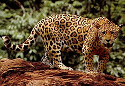

Conservación
El jaguar vuelve a recorrer los bosques mexicanos
Nuevos registros obtenidos mediante cámaras trampa muestran la presencia de jaguares en diferentes regiones naturales.
Leer noticia ...